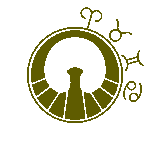

<ng-container *ngIf="color == 'blue' || color == undefined">
  
</ng-container>

<ng-container *ngIf="color == 'black'">
  
</ng-container>

<ng-container *ngIf="color == 'green'">
  
</ng-container>

<ng-container *ngIf="color == 'red'">
  
</ng-container>

<ng-container *ngIf="color == 'white'">
  
</ng-container>

<ng-container *ngIf="color == 'yellow'">
  
</ng-container>
